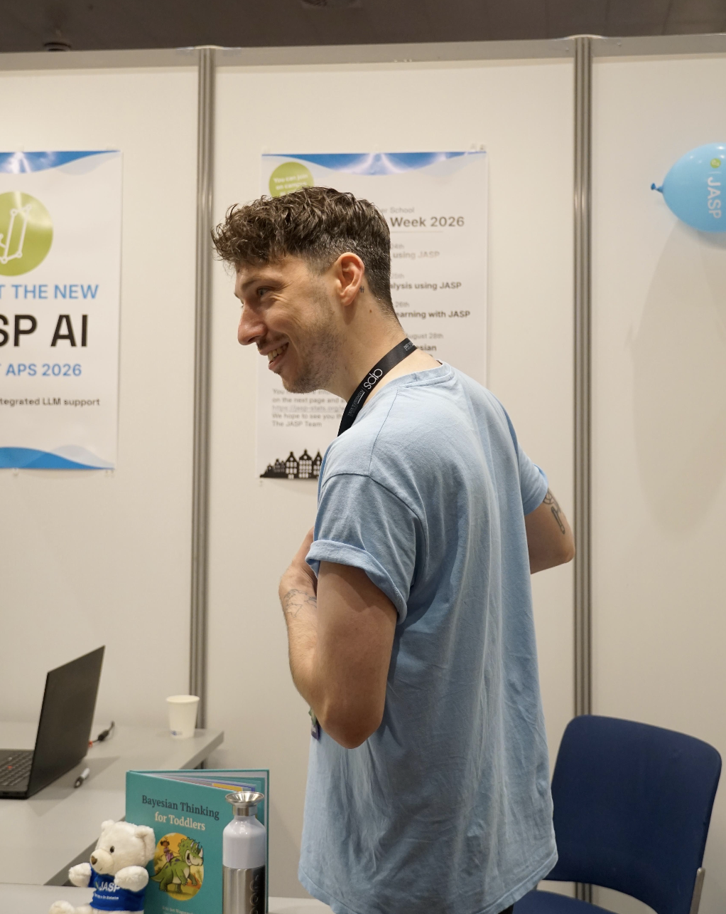

2026
Comparing variable selection and model averaging methods for logistic regression
Proceedings of the National Academy of Sciences
doi.org/10.1073/pnas.2534552123Psychological Methods · Bayesian Modeling · JASP
I am a PhD candidate at the Psychological Methods Department of the University of Amsterdam. My work focuses on robust Bayesian inference, interrupted and non-linear time series, state-space models, and statistical software for applied researchers.

Selected Publications
2026
Proceedings of the National Academy of Sciences
doi.org/10.1073/pnas.25345521232026
PsyArXiv preprint
osf.io/preprints/psyarxiv/3uh85_v12026
PsyArXiv preprint
osf.io/preprints/psyarxiv/8rv2z_v12025
Psychological Methods
dx.doi.org/10.1037/met00007822025
PsyArXiv preprint
osf.io/preprints/psyarxiv/6ftqg_v1Software
Co-developer of the R package for robust Bayesian t tests.
JASP Services B.V.Co-founder, supporting companies using JASP for quality control and data analysis.
Bayesian acceptance sampling, quality control, time series, and state-space models.
Contact